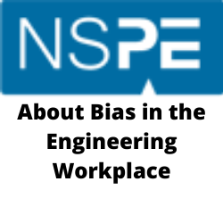
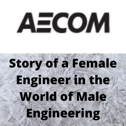
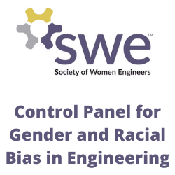
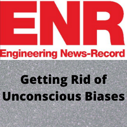

- Unconscious Bias are social stereotypes regarding groups of people that is formed outside of one’s own conscious awareness [1]. Unconscious Bias is something that affects everyone, even those that are aware of its presence.
- One might think they are aware of their biases and refuse to believe they can be capable of stereotyping people after working hard to rid themselves of bias. But bias is engrained in us as humans, something that needs to be continually worked on
- An important aspect about unconscious bias is that it can happen to the self. The impact of the conscious/unconscious self-perception bias is it negatively affects they way we work and the way we view ourselves. In the male dominated engineering field, females are at greater risk to have negative perceptions of self. Left unchecked and these negative self biases can lead to ailments such as imposter syndrome.
As Marilyn Cavicchia puts it, "In order to manage all the information and stimuli it receives each day, Jones explained, each person’s brain forms “schemas,” which are frameworks to help classify and organize the information. In fact, she noted 98 percent of the brain works without “express cognition”—that is, conscious thought. [5]" This can also be referred to as a mental model. These models are built, starting from birth, by processing the interactions in the world to form a framework of relationships regarding everything perceived.
Unconscious Bias adversely affects the workforce as stereotyping affects people's judgment when making decisions. In addition, certain groups of people will be held to unfair higher standards.
Unconscious Bias promotes...
· A Undiversified workforce
o New technologies created lack the necessary foresight to see potential issues in various use cases.
· A toxic environment for women and other minorities in the field
o This encourages those minority groups to leave the field causing the leaky pipeline
§ 32% of women opt out of STEM degree programs in college [3]
§ Only 30% of women who earn bachelors degrees in engineering are still working in the engineering filed 20 years later. [4]
o Women popularly get assigned similar types of tasks that are based on stereotypes and can be very limiting for a career.
o There are different expectations held for women specifically inside the engineering workforce. Some expectations are
§ Expectations to manage a team and its tasks
§ To help those who are stuck more often (less time able to work on own tickets)
§ Customer interactions
§ General glue work for the whole team
Very low representation of women as engineers compared to men.
The above graph shows the lower percentage of women in the field of engineering. When looking at the numbers from 1995 to 2014 their is slight growth in graduate degrees and doctorate degrees but the rate of growth is slow.
When looking at the demographics of engineering with respect to race, ethnicity and gender, the disparity is striking. The reasons the graphs are the way they are can be attributed to many systemic issues in our society, but unconscious bias can be considered a contributor.
- Unconscious Bias can be embedded in workplaces and cause harm to those in minority groups
- Unconscious Bias of the self can heavily impact the engagement and participation of ostracized groups in the engineering domain
A major first step to overcoming biases is to recognize them. Only then can we start to unpack our feelings and assessments of others.
After we identify our biases, we must own them and confront them. Take some time to allow that which resides in the unconscious mind to come to consciousness. This will help to dismantle the mental models our brain makes when we re-examine our biases in our head.
Lastly, we must continue to reflect and think about these issues, they do not disappear after working on it for a period of time. It can be equated to physical fitness; we never work out and get fit, so we don’t have to work out anymore. It is a never-ending process of self-improvement.
It makes the world a better place.
|  |  |
|  |  |
- NPR shortwave – understanding unconscious Bias
- How to fight unconscious bias in the workplace
[1] R. Strachan, A. Peixoto, I. Emembolu and M. T. Restivo, "Women in engineering: Addressing the gender gap, exploring trust and our unconscious bias," 2018 IEEE Global Engineering Education Conference (EDUCON), 2018, pp. 2088-2093, doi: 10.1109/EDUCON.2018.8363497.
[2] National Science Foundation, National Center for Science and Engineering Statistics. 2017. Women, Minorities, and Persons with Disabilities in Science and Engineering: 2017. Special Report NSF 17-310. Arlington, VA. Available at www.nsf.gov/statistics/wmpd/.
[3] Chen, X. (2013). STEM attrition: College students’ paths into and out of STEM fields.
[4] Corbett, C. & Hill, C. (2015). Solving the equation: The variables for women’s success in engineering and computing. Washington, DC: American Association of University Women.
[5] Cavicchia, Marilyn. “How to Fight Implicit Bias? With Conscious Thought, Diversity Expert Tells NABE.” American Bar Association, www.americanbar.org/groups/bar_services/publications/bar_leader/2015-16/september-october/how-fight-implicit-bias-conscious- thought-diversity-expert-tells-nabe/.
{kind=link}
{kind=link}
{kind=link}
{kind=link}